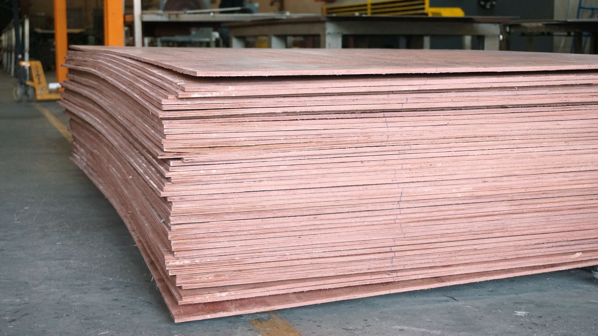

01
Building, Improvement & Material Supply

This opportunity universe brings together sourcing spaces linked to building, improvement, and material-related supply environments in Latin America.
It is relevant for buyers seeking structured access to manufacturers in areas where specification alignment, quality consistency, production follow-up, and long-term supplier suitability matter.
Index-IBL supports these programs through careful supplier qualification and coordinated sourcing support across selected opportunity spaces.
Explore this sourcing opportunity universe